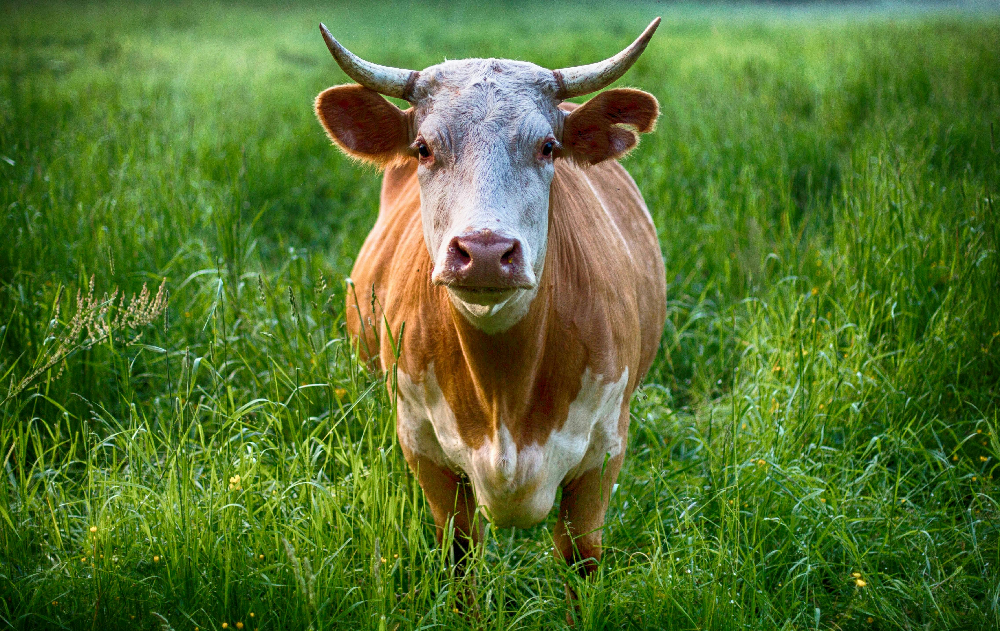

Welcome to the Cornell Beef Club!
The Cornell Beef Cattle Club is a student organization dedicated to promoting education, hands-on experience, and networking opportunities for students interested in the beef cattle industry. Open to all majors, the club provides members with the chance to engage in livestock handling, participate in industry events, and learn from professionals in the field. Through farm visits, workshops, and guest speakers, students gain valuable insights into cattle management, nutrition, genetics, and marketing. The club also fosters a strong sense of community among members who share a passion for beef production, making it an excellent resource for those considering careers in animal science, agribusiness, or veterinary medicine.